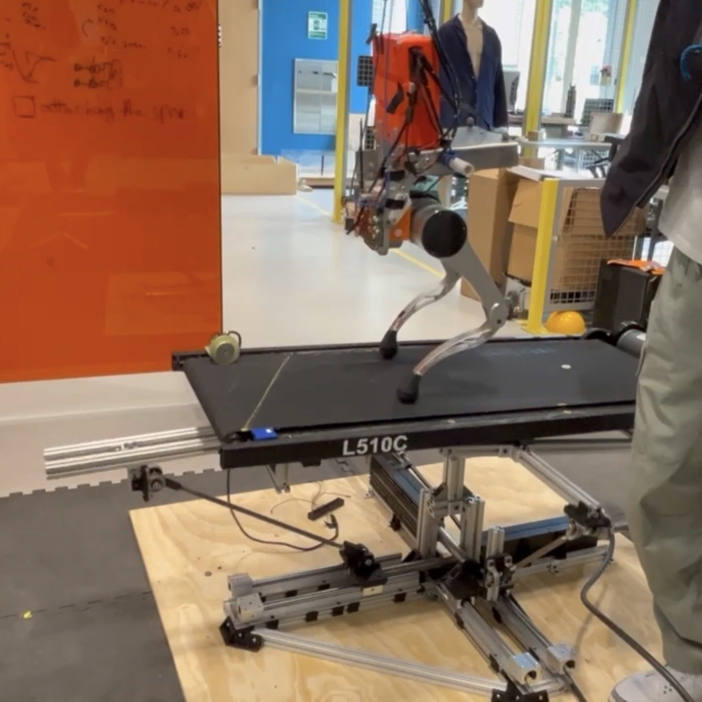
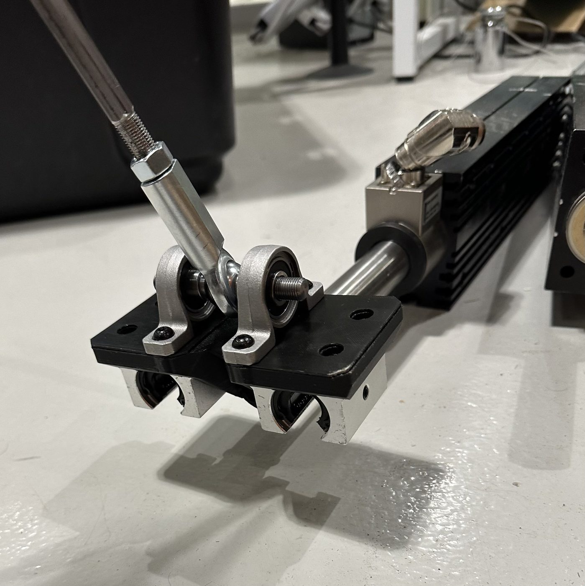
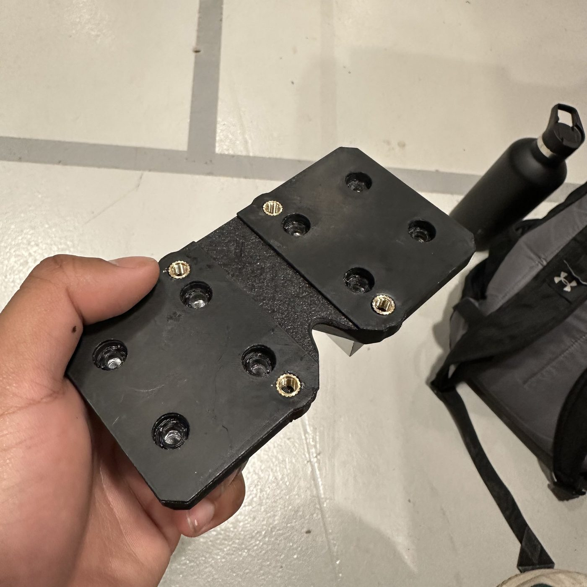
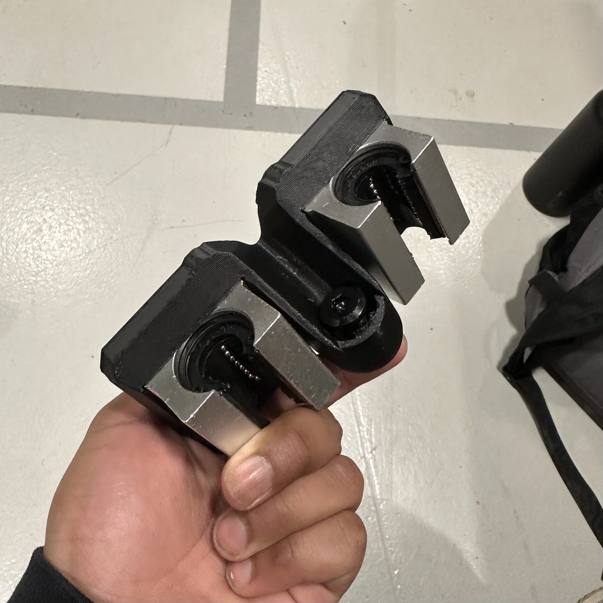
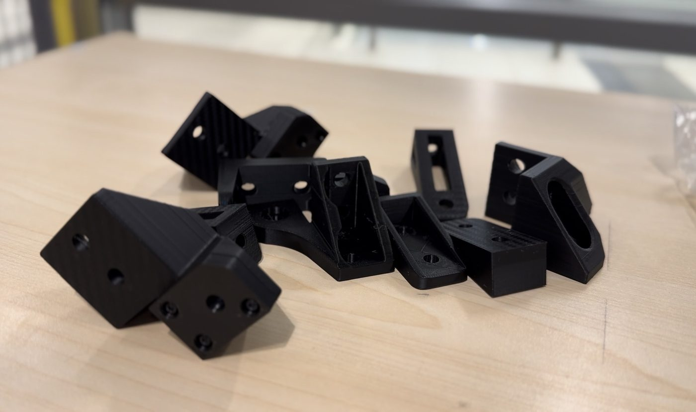
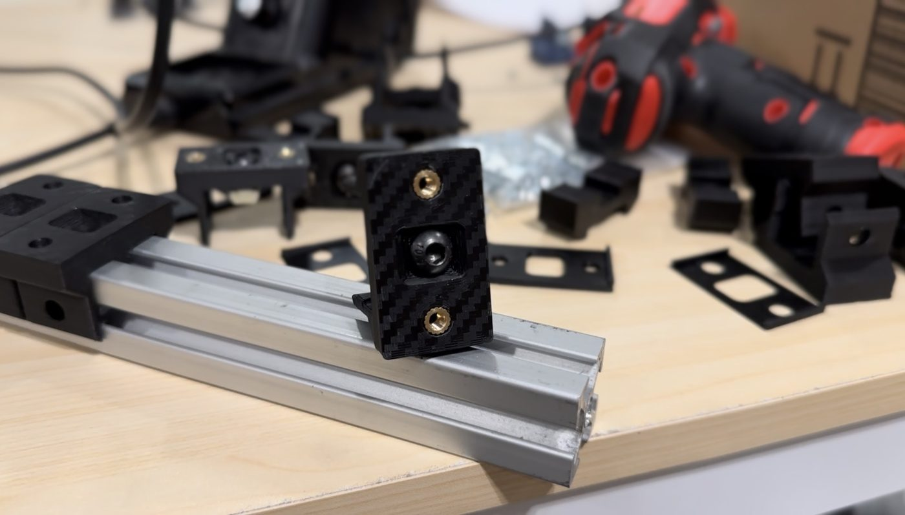
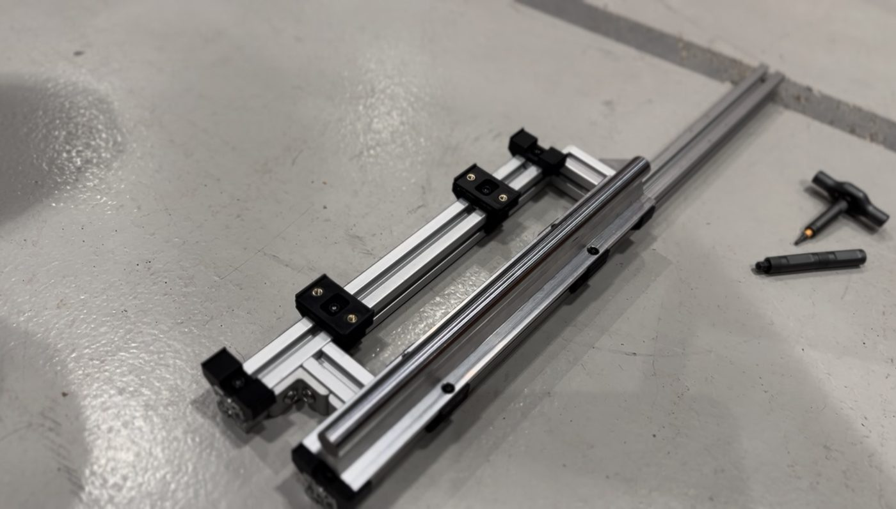
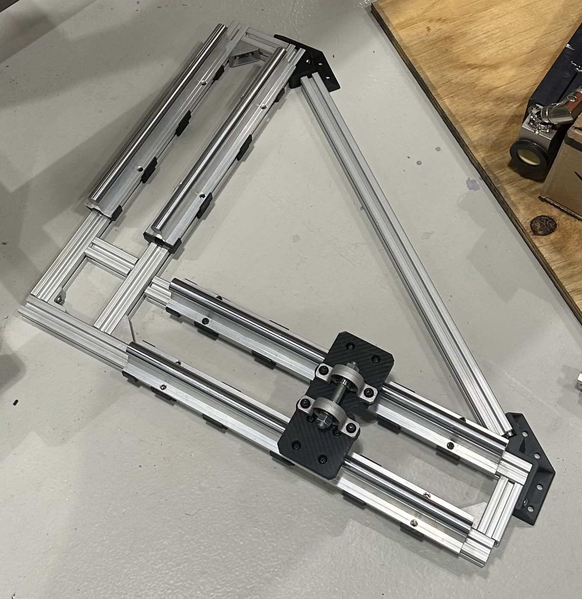
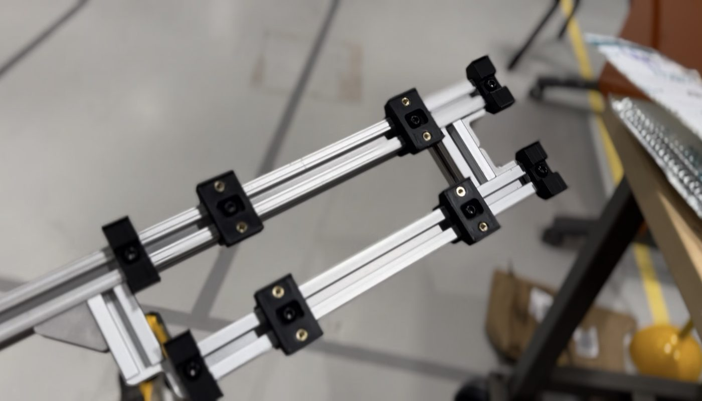
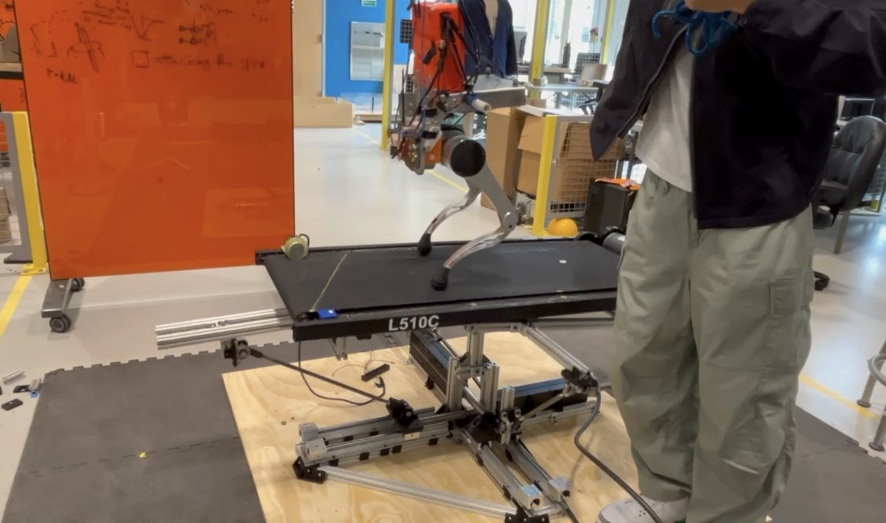

MOTION PLATFORM
A platform that tilts a treadmill

A motion platform I designed and built for the RAM (Robotics, Automation and Mechatronics) Lab at Rutgers. It holds a treadmill and moves it in multiple axes, so the lab can run locomotion experiments on ground that tilts.
It took about one semester, from the first linkage sketches through simulation, CAD, prototypes and assembly, and it's now being used for research in the lab.
Goal
The lab needed a way to manipulate a treadmill in multiple axes. There are only a few commercial systems that do this, and they cost five to six figures.
The goal was to get that capability without buying one.
Designing around what the lab had
Professor Yi told me the lab had a set of linear motors that had been sitting unused for nearly a decade.
That decided the design. Rather than pick actuators and build around them, I designed the whole system around turning the sliding of those linear motors into rotation of the platform.

Linear to rotary
I went through several joint configurations before settling on one. The core of it is essentially an offset crank-slider: each linear motor pushes a carriage, and a link from that carriage turns the platform about its axis.


Simulation and optimization
Before building anything I had to check that the crank-slider could transmit the torque the platform needs, in both axes, at every point in its workspace.
I wrote a Python simulation to do that. Adjusting the crank, slider and offset lengths by hand, I couldn't find a set that met the torque requirement everywhere, so I also wrote an optimizer. It finds the shortest link and offset lengths that still produce the required torque at every possible position.
Numbers from the simulation above. The torque never drops below the requirement anywhere in the range.
Build
With the geometry validated, I did parts selection and the CAD, then went through prototypes and iterations before final assembly and testing.





Outcome
The platform is in use at the RAM Lab, where it's being used for locomotion research and papers.
The lab got a multi-axis treadmill platform without buying a commercial system, and linear motors that had sat unused for a decade are back in use.
